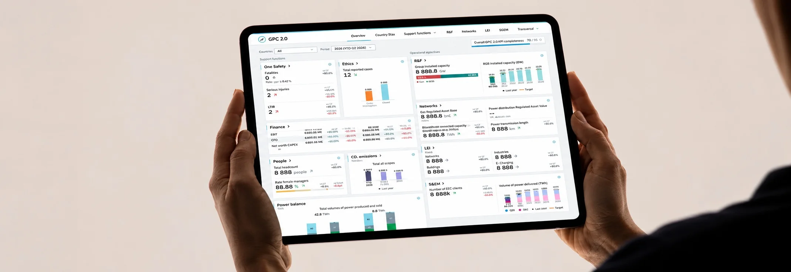

GPC 2.0
Executive reporting in Power BI
A Power BI report that puts the key figures of ENGIE’s business units in the spotlight, and that I helped bring to life from a Figma mock-up.

A report made to expose data
GPC 2.0 is a report built to display data, not to modify it. It is used by the Global Business Units (GBUs), the large entities of ENGIE, mostly during their quarterly business reviews (QBR).
The idea is to bring out the key data each GBU wants to show, and to make it easy to use in a presentation.
Making the design work in Power BI
When I arrived in October 2025, the mock-up had already been designed by another UX designer, and I was a beginner. My role, within the Power BI Factory team, was to find solutions to adapt the design to Power BI, and to keep the report maintainable.
Some elements of a Figma design cannot be reproduced as they are in Power BI. For each one, I looked for a way to stay as close as possible to the mock-up, while keeping the report simple to maintain.
The overview page, as designed in Figma and as built in Power BI. Figures are blurred.
A report that stays faithful to the mock-up
Today the report is very close to the Figma design, which I consider a real success, and the feedback has been very positive.
What I take away
Adapting a design to a tool starts with knowing the tool’s limits.
A good compromise keeps the purpose of a component, even when its shape changes.
A report that stays close to its mock-up is easier to maintain and to explain.
Figures are blurred and some details are left out, because the report is internal to ENGIE.